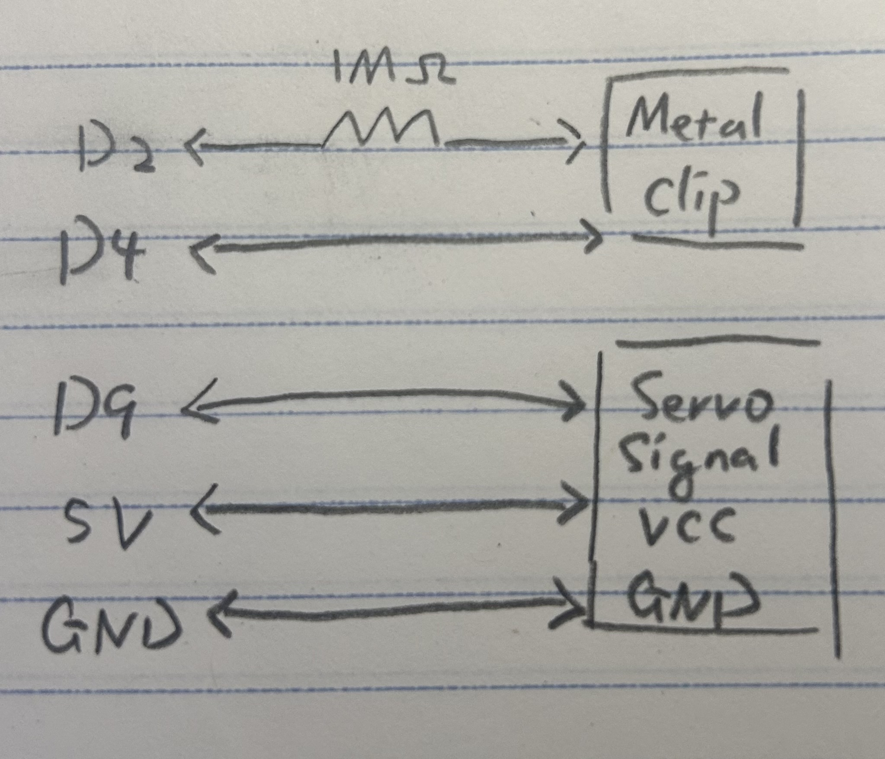
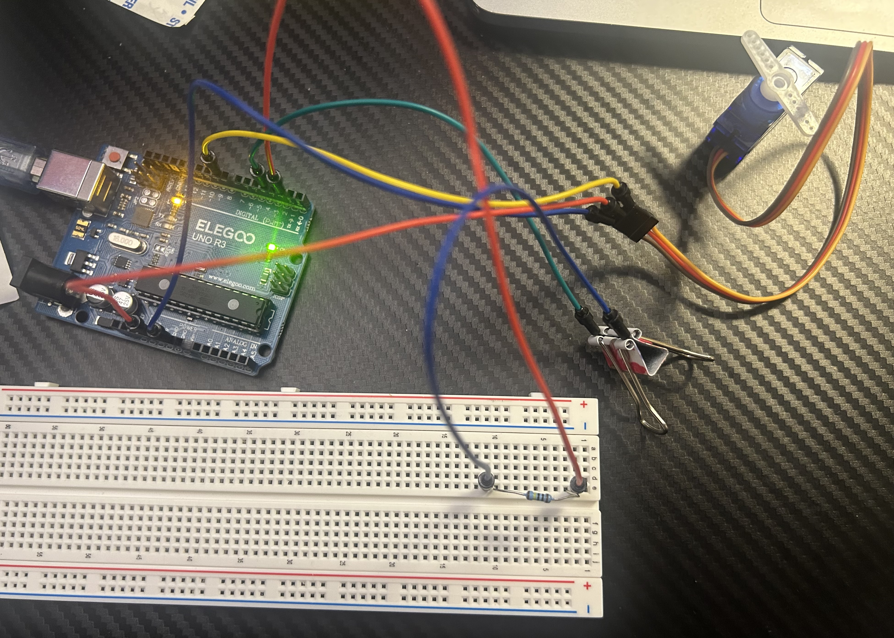
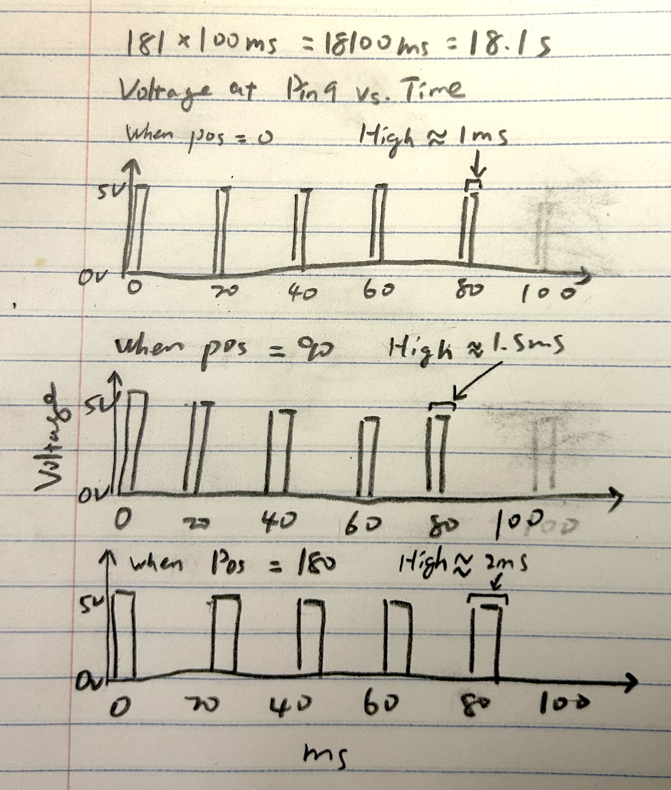

For this assignment, I created a capacitive touch sensor using a metal clip to control a servo motor. When I touch the metal clip, the servo rotates to 90 degrees. When I release it, the servo returns to 0 degrees. I used the CapacitiveSensor and Servo libraries to connect the sensor input to the motor.


I used a metal clip as the conductive surface for the capacitive touch sensor. A 1 MOhm resistor is connected between pins 2 and 4, and the metal clip is connected to pin 4. I chose a 1 MOhm resistor because I wanted the sensor to respond to physical touch rather than detect my hand from a distance. The servo motor is connected to pin 9 for its signal, and to 5V and GND for power. The metal clip does not need to connect to GND because the sensor detects changes in capacitance when it is touched.
// include capacitive touch library
#include
// include servo library
#include
// set touch sensor pins
CapacitiveSensor touch = CapacitiveSensor(2, 4);
// create servo object
Servo myservo;
// set touch threshold
long threshold = 1000;
void setup() {
// connect servo to pin 9
myservo.attach(9);
// start serial monitor
Serial.begin(9600);
// set starting angle to 0
myservo.write(0);
}
void loop() {
// read touch sensor
long value = touch.capacitiveSensor(30);
// print sensor reading
Serial.println(value);
// check if metal clip is touched
if (value > threshold) {
// turn servo to 90 degrees
myservo.write(90);
} else {
// return servo to 0 degrees
myservo.write(0);
}
// wait before next reading
delay(50);
}
I used a threshold of 1000 to distinguish between touched and untouched sensor readings. The capacitiveSensor(30) function takes 30 samples for each reading. When the reading is above the threshold, the servo moves to 90 degrees. Otherwise, it returns to 0 degrees. I added a 50 ms delay between readings.

When I touch the metal clip, the capacitance changes and the sensor reading increases. If the reading is higher than 1000, the servo rotates to 90 degrees. When I release the clip, the reading drops below the threshold and the servo returns to 0 degrees.
void loop() {
for (pos = 0; pos <= 180; pos += 1) {
myservo.write(pos);
delay(100);
}
}Draw a graph with the x-axis as time and the y-axis as voltage at pin 9 with respect to ground.

The graph shows three representative 100 ms intervals at 0°, 90°, and 180°. The for loop increases the target angle by 1° every 100 ms, from 0° to 180°, taking approximately 18.1 seconds in total. The three intervals occur at approximately 0 s, 9 s, and 18 s. During each interval, pin 9 sends a control pulse approximately every 20 ms, resulting in about five pulses per 100 ms. The voltage switches between 5V (HIGH) and 0V (LOW). The HIGH pulse width increases with the target angle, from about 1 ms at 0°, to 1.5 ms at 90°, and 2 ms at 180°. The LOW duration is the remaining time in each 20 ms period (20 ms minus the HIGH duration). The delay(100) controls when the target angle changes, while the pulses continue repeating every 20 ms.
read three sensor values
sort the values from smallest to largest
select the middle value
use the middle value as the sensor reading
I would use a median filter to remove occasional incorrect readings. By selecting the middle value from three readings, an unusually high or low reading is less likely to affect the output.
read a new sensor value
store the five most recent readings
add the five readings together
divide the sum by 5
use the average as the sensor reading
I would use a moving average filter to smooth out random noise. By averaging the five most recent readings, small fluctuations are reduced, making the sensor readings more stable.